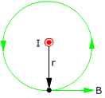

|
Campo magnético creado por cable rectilíneo
infinito
|
El cable es perpendicular
al plano de la pantalla |
|
| $$\vec{B}=\frac{\mu_0}{4\pi}\,\frac{2\,I}{r}\,(\vec{u}_I\times\vec{u}_r)$$ |
| I |
Intensidad de corriente en el conductor |
r |
Vector de posición (En el plano perpendicular al cable
y desde este hasta el punto) |
r |
Módulo del vector de posición |
ur |
Vector unitario correspondiente al de posición |
| uI |
Vector unitario con la dirección y sentido de la corriente |
Dirección y sentido del campo (Rápido)
 |
Se traza la linea
de fuerza que pasa por el punto. El campo será tangente
a la línea y tendrá el sentido de esta |
|